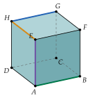
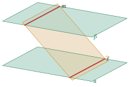
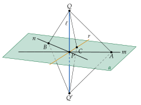
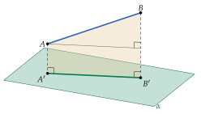
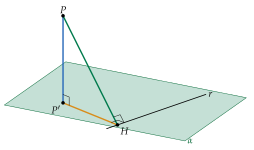
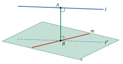
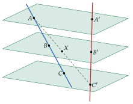
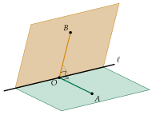
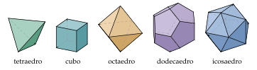

Hasta ahora hemos trabajado dentro de un plano. Pero vivimos en un espacio de tres dimensiones, y muchos de los objetos que nos interesan (cajas, pirámides, conos, esferas) no caben en un plano. En este capítulo extendemos la geometría al espacio: estudiamos cómo se relacionan rectas y planos, los ángulos diedros, los poliedros y, finalmente, el volumen, que calcularemos con una herramienta notable, el principio de Cavalieri.
Las figuras de este capítulo son dibujos en perspectiva, y por eso engañan más que las del plano: dos rectas que en el papel se cortan pueden no cortarse en el espacio. Las líneas ocultas se dibujan punteadas.
Recordemos los postulados de incidencia (Postulado 2.1.2) que se refieren al espacio: hay cuatro puntos no coplanares (I1); por tres puntos no colineales pasa un único plano (I3); si dos puntos de una recta están en un plano, toda la recta está en él (I4); y si dos planos distintos se cortan, se cortan en una recta (I5). A ellos agregamos el análogo espacial de la separación del plano.
Los puntos del espacio que no están en un plano α forman dos conjuntos convexos y disjuntos, los semiespacios de borde α, tales que si P y Q están en semiespacios distintos, el segmento PQ corta a α.
Con los postulados de incidencia ya probamos (Teorema 2.1.4 y su corolario) que un plano queda determinado por tres puntos no colineales, por una recta y un punto exterior, o por dos rectas secantes. Agregamos una cuarta forma: por dos rectas paralelas distintas, pues por definición están en un plano, y este es único porque contiene a una recta y a un punto de la otra.
Arrastre para girar la escena y cambie el ángulo entre los planos.
Dos rectas del espacio son secantes si se cortan en un punto, paralelas si son coplanares y no se cortan (o son iguales), y alabeadas (o que se cruzan) si no son coplanares.
Una recta y un plano son paralelos si no se cortan, y la recta es secante al plano si lo corta en un solo punto. (Por I4, si tienen dos puntos comunes la recta está contenida en el plano.)
Dos planos son paralelos si no se cortan (o son iguales), y secantes si se cortan; por I5, en este caso se cortan en una recta.
Cambie la inclinación y la altura de la recta. Arrastre para girar.
Arrastre para girar el cubo y elija el tipo de par de rectas.

Si una recta ℓ no contenida en un plano α es paralela a una recta m de α, entonces ℓ∥α.
Sea β el plano que contiene a las paralelas ℓ y m. Como ℓ⊂α, β=α, y α∩β=m (I5). Si ℓ cortara a α en un punto P, ese punto estaría en α∩β=m, y ℓ y m se cortarían, contra ℓ∥m.
Si dos planos paralelos son cortados por un tercer plano, las intersecciones son rectas paralelas.
Sean α∥β y γ un plano que los corta en ℓ=γ∩α y m=γ∩β. Las rectas ℓ y m están en el plano γ, y no se cortan porque ℓ⊂α, m⊂β y α∩β=∅. Luego son paralelas.

Una recta ℓ que corta a un plano α en el punto P es perpendicular a α, ℓ⊥α, si es perpendicular a todas las rectas de α que pasan por P. El punto P es el pie de la perpendicular.
Verificar la perpendicularidad con todas las rectas parece imposible. El siguiente teorema dice que bastan dos.
Si una recta es perpendicular a dos rectas secantes de un plano en su punto de corte, es perpendicular al plano.
Sean m y n rectas de α que se cortan en P, y ℓ⊥m, ℓ⊥n en P. Sea r otra recta de α por P; hay que probar ℓ⊥r. Tomamos puntos A∈m y B∈n en lados opuestos de r (dentro de α), de modo que AB corta a r en un punto C. Sobre ℓ tomamos Q y Q′ en lados opuestos de α con PQ=PQ′.
Como m es la mediatriz de QQ′ en el plano que contiene a m y ℓ, AQ=AQ′; del mismo modo BQ=BQ′. Por L-L-L, △ABQ≅△ABQ′, así que ∠QAC≅∠Q′AC, y por L-A-L, △QAC≅△Q′AC; luego CQ=CQ′. Así C y P equidistan de Q y Q′, y en el plano que contiene a ℓ y r, la recta r=PC es la mediatriz de QQ′ (Teorema 3.8.1). Por tanto r⊥ℓ.
Gire la figura con el mouse o el dedo. Las marcas indican ángulos rectos.

Por un punto dado (del plano o exterior a él) pasa exactamente una recta perpendicular a un plano dado, y exactamente un plano perpendicular a una recta dada. Dos rectas perpendiculares a un mismo plano son paralelas, y dos planos perpendiculares a una misma recta son paralelos.
Omitimos la demostración, que es una aplicación cuidadosa del teorema anterior y de los resultados correspondientes del plano.
La proyección ortogonal de un punto P sobre un plano α es el pie P′ de la perpendicular a α por P. La proyección de una figura es el conjunto de las proyecciones de sus puntos.
La distancia de P a α es d(P,α)=PP′. Como en el plano (teorema de las oblicuas), es la menor de las distancias de P a los puntos de α.
Si α∥β, todos los puntos de α están a la misma distancia de β: es la distancia entre los planos.
La proyección ortogonal de una recta no perpendicular a α es una recta; la de un segmento es un segmento (o un punto, si es perpendicular a α), y su longitud no es mayor que la del segmento.
Si ℓ no es perpendicular a α, las perpendiculares a α por los puntos de ℓ son paralelas entre sí (Teorema 8.2.6) y llenan un plano β que contiene a ℓ y es perpendicular a α; la proyección es β∩α, una recta.

Para un segmento AB con proyección A′B′, el cuadrilátero ABB′A′ es un trapecio rectángulo (o un rectángulo) en β, y trazando por A la paralela a A′B′ se obtiene un triángulo rectángulo de hipotenusa AB y un cateto congruente con A′B′; luego A′B′≤AB.
Si ℓ corta a α en O y no es perpendicular a él, el ángulo entre ℓ y α es el ángulo que forma ℓ con su proyección ortogonal ℓ′ sobre α. Si ℓ⊥α, el ángulo es recto.
Sea P∈/α, P′ su proyección sobre α y r una recta de α que no pasa por P′. Si H es el pie de la perpendicular desde P′ a r (en α), entonces PH⊥r. Es decir, la perpendicular desde P a r tiene como pie el mismo punto H.
Sean A y B puntos de r con H como punto medio de AB. En α, P′H es la mediatriz de AB, luego P′A=P′B. Los triángulos △PP′A y △PP′B son rectángulos en P′ (porque PP′⊥α) y tienen catetos congruentes; por L-A-L son congruentes y PA=PB. Así P y H equidistan de A y B, y en el plano PAB, la recta PH es la mediatriz de AB: PH⊥r.

Si ℓ y m son alabeadas, existe una única recta que las corta a ambas y es perpendicular a las dos (la perpendicular común). La longitud del segmento que determina es la menor distancia entre un punto de ℓ y un punto de m, y se llama distancia entre las rectas.
Sea α el plano que contiene a m y es paralelo a ℓ (se obtiene trazando por un punto de m la paralela a ℓ).

Proyectamos ℓ sobre α: se obtiene una recta ℓ′ paralela a ℓ, que corta a m en un punto B (no pueden ser paralelas, porque ℓ y m no lo son).
La perpendicular a α por B corta a ℓ en un punto A, y AB es perpendicular a ℓ y a m.
Para cualquier otro par de puntos X∈ℓ, Y∈m, la distancia XY es al menos la distancia de X al plano α, que es AB.
Si tres planos paralelos cortan a dos rectas t y t′ en A,B,C y A′,B′,C′, entonces BCAB=B′C′A′B′.
Si t y t′ son coplanares, el plano que las contiene corta a los tres planos en tres rectas paralelas (Teorema 8.2.3), y es el teorema de Thales del plano. Si no, se traza el segmento AC′, que corta al plano del medio en un punto X. Aplicando Thales en el plano de t y AC′ y en el plano de t′ y AC′, se obtiene BCAB=XC′AX=B′C′A′B′.

Un ángulo diedro es la unión de dos semiplanos (las caras) que tienen el mismo borde (la arista) y no están en un mismo plano. Un ángulo rectilíneo del diedro es el ángulo que forman dos rayos, uno en cada cara, perpendiculares a la arista en un mismo punto.
Abra y cierre el diedro con el deslizador y gire la figura.
Todos los ángulos rectilíneos de un diedro son congruentes.
Sean ∠AOB y ∠A′O′B′ rectilíneos con O, O′ en la arista y OA=O′A′, OB=O′B′. Los rayos OA y O′A′ son paralelos y del mismo sentido (están en una cara y son perpendiculares a la arista), así que OAA′O′ es un paralelogramo y AA′ es paralelo y congruente con OO′; lo mismo para BB′. Entonces AA′B′B es un paralelogramo, AB=A′B′, y por L-L-L, △AOB≅△A′O′B′.
Esto permite definir la medida de un diedro como la de cualquiera de sus ángulos rectilíneos. Un diedro es agudo, recto u obtuso según lo sea su ángulo rectilíneo, y dos planos son perpendiculares si forman diedros rectos.

Un poliedro es un sólido limitado por un número finito de regiones poligonales planas, sus caras, de modo que cada lado de una cara es lado de exactamente otra cara. Los lados de las caras son las aristas y sus vértices son los vértices del poliedro. Un poliedro es convexo si queda entero en uno de los semiespacios determinados por el plano de cada cara.
Mueva «Doblar» y gire la escena.
En cada vértice de un poliedro convexo concurren al menos tres caras, que forman un ángulo poliedro. Un resultado fundamental, cuya demostración omitimos, es que la suma de los ángulos de las caras que concurren en un vértice de un poliedro convexo es menor que 360∘. Se ve en un modelo de papel: si la suma fuera 360∘, las caras quedarían planas sobre la mesa.
En todo poliedro convexo con V vértices, A aristas y C caras, V−A+C=2.
Quitamos una cara y “aplastamos” el resto sobre un plano, obteniendo una red de polígonos con los mismos V y A y con C−1 regiones.
Hay que ver que en la red V−A+R=1.
Triangulamos cada región trazando diagonales: cada diagonal agrega una arista y una región, y V−A+R no cambia.
Luego quitamos uno a uno los triángulos del borde: si el triángulo tiene una arista en el borde, se pierden una arista y una región; si tiene dos, se pierden dos aristas, un vértice y una región.
En ambos casos V−A+R no cambia.
Al final queda un solo triángulo, con 3−3+1=1.
Un poliedro convexo es regular si sus caras son polígonos regulares congruentes y en cada vértice concurre el mismo número de caras.
Existen exactamente cinco poliedros regulares: el tetraedro, el cubo (hexaedro), el octaedro, el dodecaedro y el icosaedro.
Sea n≥3 el número de lados de cada cara y m≥3 el número de caras en cada vértice.
El ángulo de cada cara es n(n−2)180∘, y la suma en un vértice debe ser menor que 360∘: m⋅n(n−2)180∘<360∘⟺m(n−2)<2n⟺(m−2)(n−2)<4. Con m,n≥3, los factores son enteros positivos de producto menor que 4: (m−2,n−2) es (1,1), (1,2), (2,1), (1,3) o (3,1).
Es decir, (n,m) es (3,3) tetraedro, (4,3) cubo, (3,4) octaedro, (5,3) dodecaedro o (3,5) icosaedro.
Que estos cinco existen se comprueba construyéndolos.
(Con Euler se obtienen además V, A, C: de nC=2A=mV y V−A+C=2.)
Elija un sólido y gírelo. Las aristas ocultas aparecen punteadas. Compruebe la fórmula de Euler.
| Poliedro | Caras | C | A | V | Caras por vértice |
|---|---|---|---|---|---|
| Tetraedro | triángulos | 4 | 6 | 4 | 3 |
| Cubo | cuadrados | 6 | 12 | 8 | 3 |
| Octaedro | triángulos | 8 | 12 | 6 | 4 |
| Dodecaedro | pentágonos | 12 | 30 | 20 | 3 |
| Icosaedro | triángulos | 20 | 30 | 12 | 5 |

Próxima semana: Volúmenes: prismas, pirámides y la esfera
© 2026 Santiago Alzate Suárez. Material de autoría propia; todos los derechos reservados. Se prohíbe su reproducción o distribución sin autorización, y todo uso debe citar al autor.